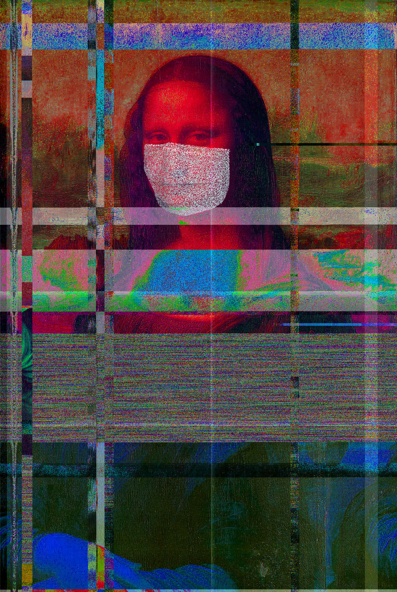
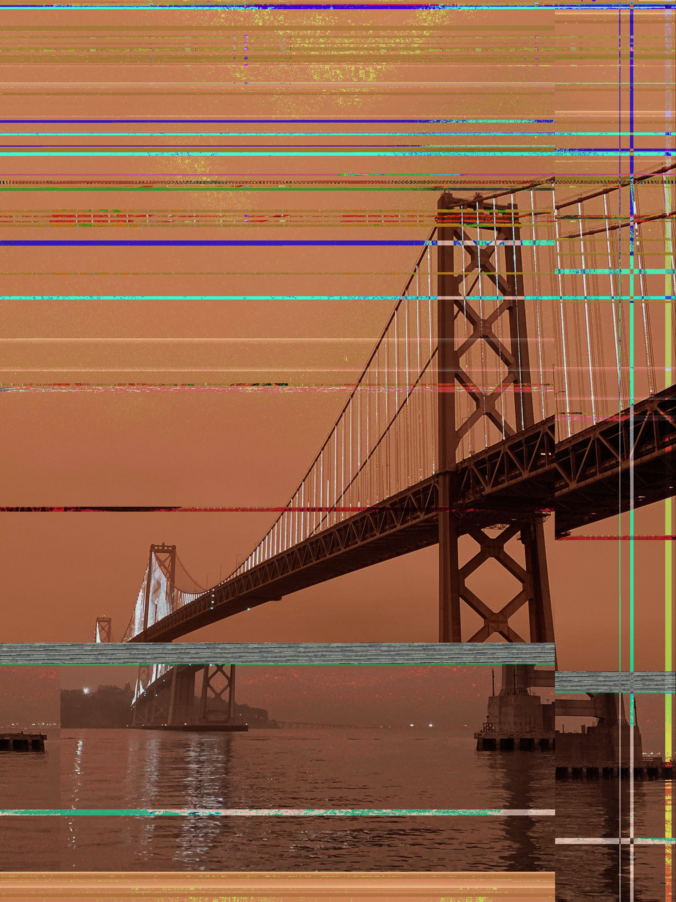
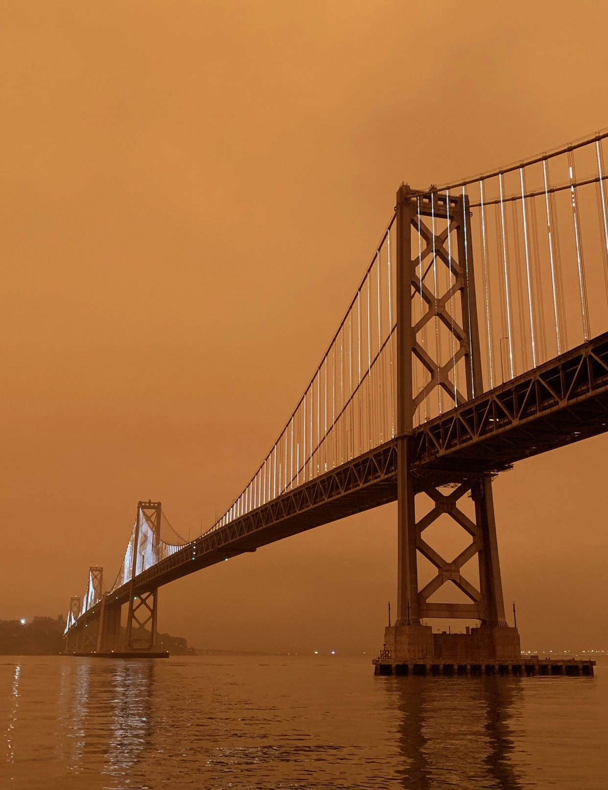
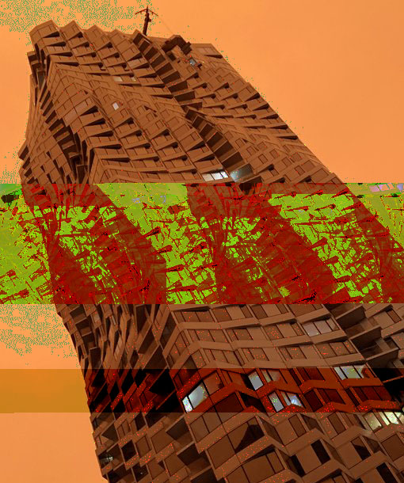
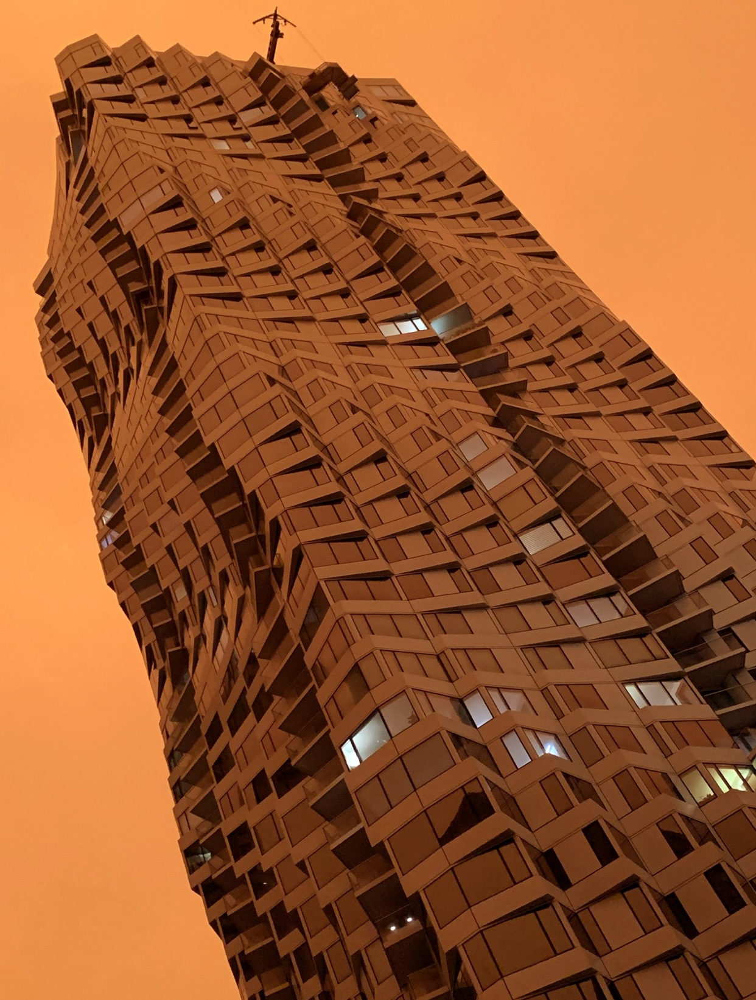

Using the inherent digital nature of files, can we manipulate them to make something that is aesthetically pleasing?
1. Manipulate image files 2. Use open source and other software to create glitches 3. Consider the role of the artist in making glitches, control versus chance
These series manipulated by inputting image code into TextEdit. Code was deleted, duplicated, and all around messed up. This image is "Sick Lisa" exposed to the Virus and having her mask on as a respect to others and the protection to herself as well. This were manipulated by converting the image file to the RAW data and inputting into Audacity. An echo filter was applied to RAW data before being exported and converted into a jpg .


While we are dealing with 2020 unexpected events, I was taking a walk in San Francisco, and I saw the entire sky being completely orange due to the fire in CA. The last image of this series was taken in the same day , manipulated by inputting image code into TextEdit. Code was deleted, duplicated, and all around messed up.



Pegah Taheri
Contact: Pegah.taherieilaghi@sjsu.edu